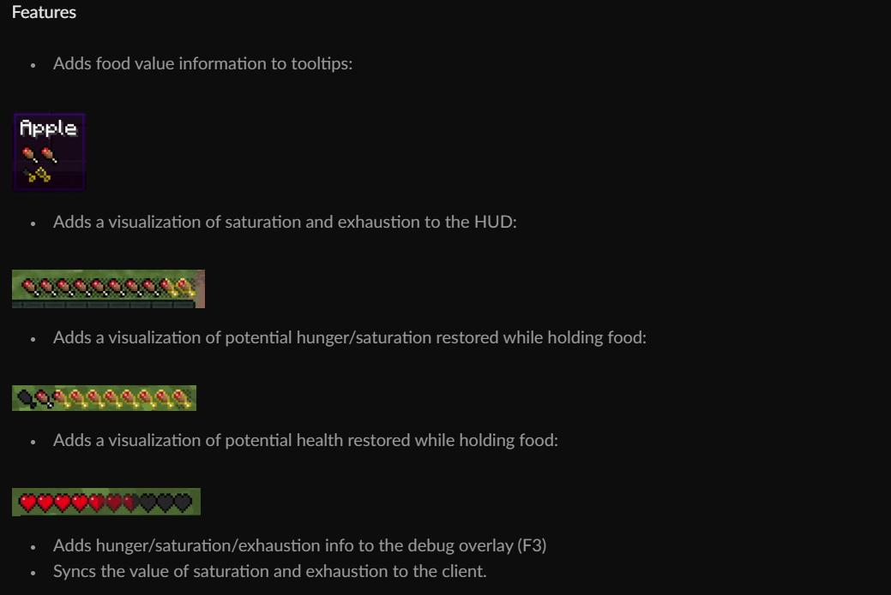

Sodium & Lithium
Available on: All Loaders
The absolute staple of performance mods by the same creator.
These are very effective and blew Optifine out of the water when it was released.
https://www.curseforge.com/minecraft/mc-mods/sodium
https://www.curseforge.com/minecraft/mc-mods/lithium

Iris Shaders
Available on: NeoForge, Fabric
Allows you to add shaders into Minecraft without installing Optifine and is compatible with 99.9% of shaders available.
https://www.curseforge.com/minecraft/mc-mods/irisshaders

Jade
Available on: NeoForge, Fabric
An info HUD mod that shows you what you're looking at. Optional but useful for playing with mods.
 https://www.curseforge.com/minecraft/mc-mods/jade
https://www.curseforge.com/minecraft/mc-mods/jade
Also needs its addon for compatibility:
https://www.curseforge.com/minecraft/mc-mods/jade-addons

Just Enough Items (JEI)
Available on: NeoForge
Another info HUD mod that allows you to see recipes both vanilla and modded. Another optional but useful for playing with mods.
 https://www.curseforge.com/minecraft/mc-mods/jei
https://www.curseforge.com/minecraft/mc-mods/jei

Xaero's Minimap
Available on: NeoForge, Fabric
A minimap HUD. Optional.
 https://www.curseforge.com/minecraft/mc-mods/xaeros-minimap
https://www.curseforge.com/minecraft/mc-mods/xaeros-minimap

Appleskin
Available on: NeoForge, Fabric
Super optional. Shows useful hunger, saturation, and health HUD info.

https://www.curseforge.com/minecraft/mc-mods/appleskin